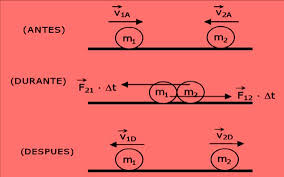
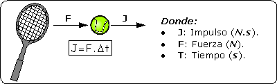
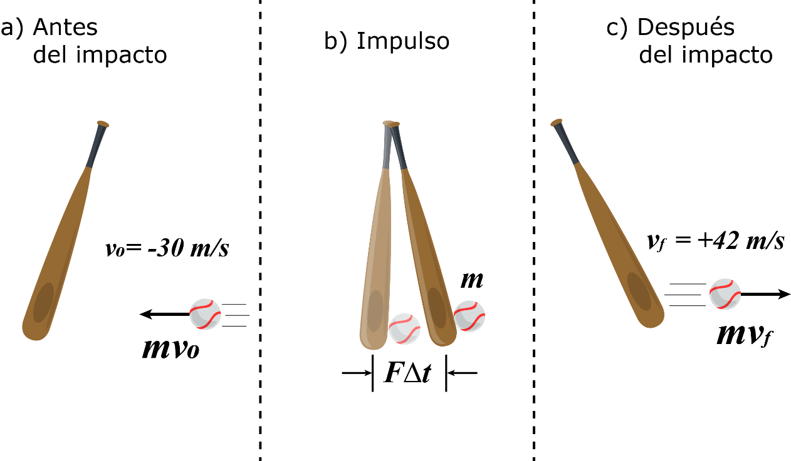
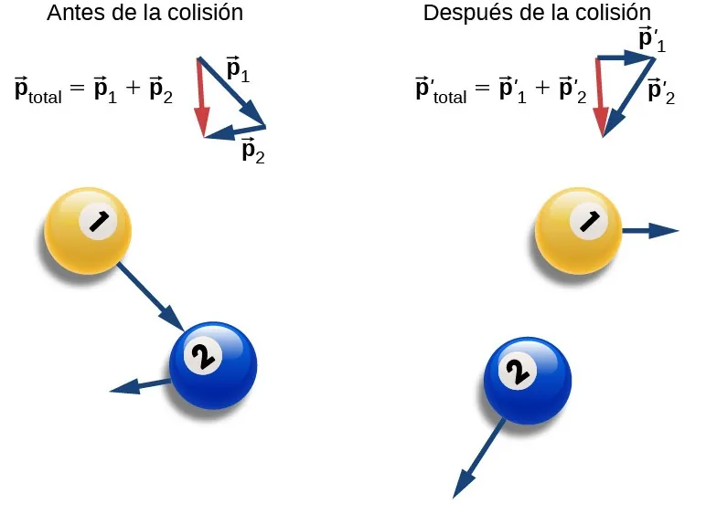
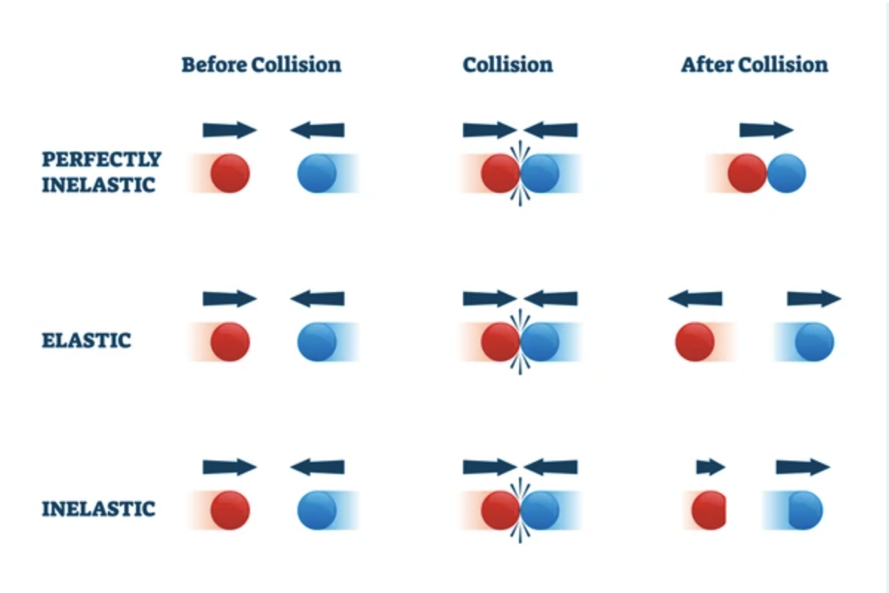

Unidad 7: Impulso y momentum lineal#
Descripción general#
En esta unidad se estudia el momentum lineal como una magnitud fundamental del movimiento y el impulso como el efecto de una fuerza aplicada durante un intervalo de tiempo. Estos conceptos permiten analizar interacciones breves e intensas, como choques, impactos y retrocesos.
Además, se introduce el principio de conservación de la cantidad de movimiento, una herramienta central para el estudio de sistemas de partículas y colisiones.
{kind=link}
Objetivo de aprendizaje#
Al finalizar esta unidad, el estudiante será capaz de:
Definir e interpretar el momentum lineal de una partícula
relacionar impulso y cambio de momentum
Aplicar la forma impulsiva de la Segunda Ley de Newton
Comprender el principio de conservación del momentum lineal
resolver problemas de retroceso y colisiones unidimensionales
Distinguir entre colisiones elásticas, inelásticas y perfectamente inelásticas.
1. Introducción#
Cuando una fuerza actúa sobre un cuerpo durante un cierto intervalo de tiempo, puede modificar su estado de movimiento. En muchos fenómenos físicos, especialmente en choques, no basta con conocer solo la fuerza o solo el tiempo por separado: es importante considerar ambos de manera conjunta.
Para ello se introducen dos conceptos clave:
El momentum lineal o cantidad de movimiento.
El impulso.
2. Momentum lineal o cantidad de movimiento#
El momentum lineal de una partícula es una magnitud vectorial que mide la cantidad de movimiento asociada a su masa y su velocidad.
Se define como:
donde:
\(m\) es la masa del cuerpo;
\(\vec{v}\) es su velocidad.
Propiedades#
Es una magnitud vectorial.
Tiene la misma dirección y sentido que la velocidad.
Aumenta si aumenta la masa o la rapidez.
Unidad de medida#
En el Sistema Internacional:
No tiene un nombre especial distinto de esa combinación de unidades.
3. Interpretación física del momentum#
El momentum lineal da una medida de qué tan difícil es cambiar el movimiento de un cuerpo.
Por ejemplo:
Un objeto muy masivo moviéndose lentamente puede tener un momentum importante.
Un objeto liviano moviéndose muy rápido también puede tener un momentum considerable.
Esto explica por qué el momentum es especialmente útil para analizar choques e impactos.
4. Impulso#
El impulso cuantifica el efecto global de una fuerza que actúa sobre un cuerpo durante un intervalo de tiempo.
{kind=link}

Para una fuerza media aplicada durante un intervalo \(\Delta t\), se define como:
Unidad de medida#
Las unidades del impulso son:
que equivalen a:
es decir, las mismas unidades que el momentum lineal.
{kind=link}

5. Relación entre impulso y cambio de momentum#
La forma impulsiva de la Segunda Ley de Newton establece que el impulso aplicado a un cuerpo es igual al cambio en su momentum lineal:
donde:
Entonces:
Interpretación física#
Si el impulso es grande, el cambio de momentum será grande.
Si la fuerza actúa durante más tiempo, puede producir un mayor cambio de momentum.
Una fuerza intensa en poco tiempo puede tener el mismo efecto que una fuerza menor actuando durante más tiempo.
{kind=link}

6. Fuerza media#
A partir de la definición de impulso, también puede obtenerse la fuerza media:
o bien:
Esto es útil en problemas donde se conoce el cambio de velocidad de un cuerpo y el tiempo de interacción.
7. Impulso en fuerzas variables#
Si la fuerza no es constante, el impulso corresponde al área bajo la curva en una gráfica fuerza versus tiempo.
Conceptualmente:
mayor área bajo la curva implica mayor impulso.
el signo del área determina el signo del impulso.
el impulso sigue siendo igual al cambio de momentum.
8. Sistema de partículas y conservación del momentum#
Cuando se analiza un sistema de varias partículas, el momentum total se obtiene sumando vectorialmente los momenta individuales:
o, en términos de masa y velocidad:
9. Principio de conservación de la cantidad de movimiento#
Si la fuerza externa neta que actúa sobre un sistema es nula, entonces el momentum lineal total del sistema permanece constante.
Matemáticamente:
Esto significa que:
Interpretación física#
Aunque las partículas del sistema choquen, se separen o cambien sus velocidades, el momentum total del sistema se conserva si no hay fuerzas externas netas.
{kind=link}

10. Conservación del momentum en una dimensión#
En problemas unidimensionales, la ecuación de conservación se escribe de forma escalar, cuidando los signos según el sentido del movimiento.
Para dos cuerpos:
Esta ecuación es la base para estudiar colisiones lineales.
11. Retroceso#
Un ejemplo clásico de conservación del momentum es el retroceso de un cañón o de un arma al disparar un proyectil.
Si inicialmente el sistema está en reposo, entonces el momentum total inicial es cero:
Después del disparo:
De ahí se concluye que los cuerpos se mueven en sentidos opuestos con momenta de igual magnitud y signo contrario.
Interpretación#
El proyectil sale hacia adelante y el cañón retrocede de modo que el momentum total se conserve.
12. Colisiones#
Una colisión es una interacción breve entre dos o más cuerpos durante la cual actúan fuerzas internas muy grandes durante un intervalo de tiempo pequeño.
En toda colisión aislada se conserva el momentum lineal total.
Sin embargo, la energía cinética no siempre se conserva. Según esto, las colisiones se clasifican en distintos tipos.
{kind=link}

13. Colisión elástica#
En una colisión elástica se conservan:
El momentum lineal.
La energía cinética.
Para dos cuerpos en una dimensión:
Conservación del momentum#
Conservación de la energía cinética#
Interpretación#
Los cuerpos rebotan sin pérdida neta de energía cinética del sistema.
14. Colisión inelástica#
En una colisión inelástica se conserva el momentum lineal, pero no la energía cinética.
Es decir:
pero:
Parte de la energía cinética se transforma en otras formas de energía, por ejemplo:
calor.
deformaciones.
sonido.
15. Colisión perfectamente inelástica#
En una colisión perfectamente inelástica, los cuerpos quedan unidos después del choque y continúan moviéndose con una misma velocidad final.
Entonces:
De aquí:
Interpretación#
Es el caso en que la pérdida de energía cinética es máxima dentro de las colisiones que conservan momentum.
16. Coeficiente de restitución#
En algunos cursos introductorios también se usa el coeficiente de restitución para caracterizar el tipo de colisión.
Se define como la razón entre la rapidez relativa de separación y la rapidez relativa de aproximación:
En una dimensión:
Casos importantes#
\(e = 1\): colisión elástica
\(0 < e < 1\): colisión inelástica
\(e = 0\): colisión perfectamente inelástica
17. Relación entre impulso y colisión#
Durante una colisión, los cuerpos ejercen fuerzas mutuamente durante un tiempo breve.
Por la Tercera Ley de Newton:
las fuerzas internas son iguales y opuestas
los impulsos internos también son iguales y opuestos
Esto explica por qué el momentum total del sistema se conserva en ausencia de fuerzas externas.
18. Aplicaciones típicas#
Los conceptos de impulso y momentum lineal permiten analizar situaciones como:
deportes de impacto
choque entre vehículos
retroceso de armas o cañones
colisiones entre masas
explosiones
separación o unión de cuerpos
En muchos casos, el enfoque basado en momentum es más útil que el enfoque basado en fuerzas, especialmente cuando las interacciones ocurren en tiempos muy cortos.
19. Síntesis de la unidad#
En esta unidad se estudiaron dos magnitudes fundamentales para describir interacciones mecánicas:
el momentum lineal, asociado al movimiento de una masa
el impulso, asociado a la acción de una fuerza en el tiempo
También se introdujo el principio de conservación de la cantidad de movimiento, que permite resolver problemas de colisiones y sistemas aislados de manera directa.
Estos conceptos son fundamentales para el análisis de choques, impactos y movimiento de sistemas de partículas.
20. Ejemplos: Dinámica de un Choque e Ingeniería de Parachoques#
Escenario Conceptual: Imagina que estamos probando un nuevo parachoques en el laboratorio. Tenemos dos masas en una pista sin fricción (un sistema aislado en una dimensión). La masa \(m_1 = 2.0 \text{ kg}\) se mueve inicialmente a \(v_{1i} = 6.0 \text{ m/s}\). La masa \(m_2 = 3.0 \text{ kg}\) está inicialmente en reposo (\(v_{2i} = 0 \text{ m/s}\)). Cuando colisionan, el parachoques de deformación programada absorbe energía, generando una fuerza variable en el tiempo durante el impacto que dura exactamente \(\Delta t = 0.1 \text{ s}\). Modelamos esta fuerza variable mediante la siguiente función senoidal:
Donde la amplitud máxima de la fuerza es \(F_0 = 50\pi \approx 157.08 \text{ N}\).
Desarrollo Paso a Paso 1.
Cálculo del Impulso mediante Fuerzas Variables: El impulso \(\vec{J}\) transferido de la partícula 1 a la 2 es el área bajo la curva de la fuerza variable:
Sustituyendo nuestros valores:
Determinación de la Fuerza Media: La fuerza constante equivalente que provocaría el mismo cambio de momentum es: $\(F_{\text{media}} = \frac{J}{\Delta t} = \frac{10.0 \text{ N}\cdot\text{s}}{0.1 \text{ s}} = 100.0 \text{ N}\)$
Efecto en el Momentum Individual: Por el teorema del impulso y el cambio de momentum (\(\vec{J} = \Delta \vec{p}\)):
Para la Masa 2: Recibe un impulso positivo de \(+10.0 \text{ N}\cdot\text{s}\).
\[\Delta p_2 = J \implies m_2 v_{2f} - 0 = 10.0 \implies 3.0 v_{2f} = 10.0 \implies v_{2f} = 3.33 \text{ m/s}\]Para la Masa 1: Por tercera ley de Newton (fuerzas internas del sistema), recibe un impulso de \(-10.0 \text{ N}\cdot\text{s}\).
\[\Delta p_1 = -J \implies m_1 v_{1f} - m_1 v_{1i} = -10.0 \implies 2.0 v_{1f} - 2.0(6.0) = -10.0\]\[2.0 v_{1f} = 12.0 - 10.0 = 2.0 \implies v_{1f} = 1.0 \text{ m/s}\]Verificación de la Conservación del Momentum del Sistema:
¡El momentum total del sistema se conservó perfectamente!
Diagnóstico del Choque y Coeficiente de Restitución: Calculamos el coeficiente de restitución (\(e\)):
Como \(0 < e < 1\), clasificamos formalmente este evento como una Colisión Inelástica.
Código para Colab:#
Este script grafica la fuerza del impacto y la evolución en tiempo real de las velocidades y momenta de ambas partículas durante el milisegundo del choque.
import numpy as np
import matplotlib.pyplot as plt
# Parámetros del problema
m1, m2 = 2.0, 3.0
v1i, v2i = 6.0, 0.0
dt_impacto = 0.1
F0 = 50 * np.pi
# Vector de tiempo fino para capturar el impacto
t = np.linspace(0, dt_impacto, 500)
# 1. Fuerza variable en el tiempo
F = F0 * np.sin(np.pi * t / dt_impacto)
# 2. Impulso acumulado a lo largo del choque (integral acumulativa)
from scipy.integrate import cumulative_trapezoid as cumtrapz
J_acumulado = cumtrapz(F, t, initial=0)
# 3. Evolución de velocidades usando J(t) = Delta P(t)
v1_t = v1i - (J_acumulado / m1)
v2_t = v2i + (J_acumulado / m2)
# Gráficos pedagógicos
fig, (ax1, ax2) = plt.subplots(1, 2, figsize=(14, 5))
# Izquierda: Perfil de Fuerza e Impulso
ax1.plot(t, F, color='crimson', linewidth=2.5, label='Fuerza Variable $F(t)$')
ax1.fill_between(t, F, color='crimson', alpha=0.15, label=f'Área = Impulso ({J_acumulado[-1]:.1f} N·s)')
ax1.axhline(100, color='black', linestyle='--', label='Fuerza Media (100 N)')
ax1.set_title('Perfil de Fuerza Variable durante el Choque', fontweight='bold')
ax1.set_xlabel('Tiempo (s)')
ax1.set_ylabel('Fuerza (N)')
ax1.legend()
ax1.grid(True, alpha=0.3)
# Derecha: Cambio en las velocidades
ax2.plot(t, v1_t, color='darkblue', linewidth=2, label='Velocidad $m_1$')
ax2.plot(t, v2_t, color='darkorange', linewidth=2, label='Velocidad $m_2$')
ax2.set_title('Transición de Velocidades debido al Impulso', fontweight='bold')
ax2.set_xlabel('Tiempo (s)')
ax2.set_ylabel('Velocidad (m/s)')
ax2.legend()
ax2.grid(True, alpha=0.3)
plt.tight_layout()
plt.show()
Dato interesante:#
Si observas con detenimiento el gráfico de la derecha obtenido al correr el código, notarás que aproximadamente en \(t \approx 0.065 \text{ s}\), la curva azul (\(m_1\)) y la curva naranja (\(m_2\)) se cruzan. En ese instante exacto, ambas masas se mueven a la misma velocidad (\(\approx 2.4 \text{ m/s}\)).
Este punto de intersección representa el instante de máxima deformación de los parachoques. Físicamente significa lo siguiente:
El fin de la fase de compresión: Desde \(t = 0\) hasta este punto, la masa trasera (\(m_1\)) se movía más rápido que la delantera (\(m_2\)), por lo que se venían acercando y aplastando el parachoques. En el cruce, al igualarse las velocidades, el parachoques ya no se puede comprimir más.
Coincidencia con la velocidad del Centro de Masa (\(v_{cm}\)): En ese milisegundo exacto, como ambos cuerpos se mueven solidarios a la misma velocidad, esa velocidad es idéntica a la velocidad del centro de masa del sistema (\(v_{cm} = 2.4 \text{ m/s}\)).
Inicio de la fase de restitución: Inmediatamente después de este punto, el parachoques libera la energía elástica acumulada, “empujando” a \(m_2\) para que se aleje a mayor velocidad y frenando aún más a \(m_1\) hasta que se separan por completo en \(t = 0.1 \text{ s}\).
Nota
Si este choque hubiera sido perfectamente inelástico (los objetos se quedan pegados para siempre), las dos curvas se habrían fusionado en ese punto de cruce y habrían continuado juntas como una sola línea horizontal hasta el final del gráfico.
Ejercicio: El Rescate en la Pista de Hielo#
Un patinador de masa \(m_1 = 60.0 \text{ kg}\) se desliza por una pista de hielo sin fricción a una velocidad constante de \(v_{1i} = 4.0 \text{ m/s}\) hacia la derecha. Directamente en su trayectoria se encuentra una patinadora de masa \(m_2 = 40.0 \text{ kg}\) que está inicialmente en reposo (\(v_{2i} = 0\)). Al pasar junto a ella, el primer patinador la toma del brazo y continúan moviéndose juntos. ¿Cuál es la velocidad final del sistema formado por ambos patinadores inmediatamente después del acoplamiento? Demuestre que se trata de una colisión perfectamente inelástica calculando su coeficiente de restitución.
Solución:
Paso 1: Identificación de datos y estado del sistema
Masa 1: \(m_1 = 60.0 \text{ kg}\)
Velocidad inicial: \(v_{1i} = 4.0 \text{ m/s}\)
Masa 2: \(m_2 = 40.0 \text{ kg}\)
Velocidad inicial: \(v_{2i} = 0 \text{ m/s}\)
Como no hay fuerzas externas netas en el eje horizontal (hielo sin fricción), el sistema está aislado y el momentum lineal se conserva.
Paso 2: Conservación del Momentum (\(P_i = P_f\))
Dado que al final se mueven juntos, comparten la misma velocidad final (\(v_f\)):
Sustituyendo los valores numéricos:
Despejamos \(v_f\):
Paso 3: Cálculo del Coeficiente de Restitución (\(e\))Para verificar el tipo de colisión, aplicamos la definición:$\(e = - \frac{v_{2f} - v_{1f}}{v_{2i} - v_{1i}}\)\(Como ambos patinadores se mueven juntos, sus velocidades finales son idénticas (\)v_{1f} = v_{2f} = 2.4 \text{ m/s}$):
Respuesta: La velocidad conjunta es \(2.4 \text{ m/s}\) hacia la derecha y, dado que \(e = 0\), se confirma matemáticamente que es una colisión perfectamente inelástica.
Código para Google Colab#
Este pequeño bloque de código servirá para puedas comprobar el resultado numérico usando Google Colab.
# Datos de entrada
m1 = 60.0 # kg
v1i = 4.0 # m/s
m2 = 40.0 # kg
v2i = 0.0 # m/s
# Cálculo del momentum inicial
P_inicial = (m1 * v1i) + (m2 * v2i)
# Por conservación del momentum: P_inicial = (m1 + m2) * vf
v_final = P_inicial / (m1 + m2)
# Coeficiente de restitución
e = - (v_final - v_final) / (v2i - v1i)
print(" VERIFICACIÓN DE EJERCICIO ")
print(f"Momentum Inicial Total: {P_inicial:.1f} kg*m/s")
print(f"Velocidad Final Conjunta (vf): {v_final:.2f} m/s")
print(f"Coeficiente de Restitución (e): {e:.1f}")
Conceptos clave#
cantidad de movimiento
momentum lineal
impulso
fuerza media
cambio de momentum
sistema aislado
conservación del momentum
retroceso
colisión
colisión elástica
colisión inelástica
colisión perfectamente inelástica
coeficiente de restitución
Fórmulas clave#
Guía asociada#
Guía 7: Impulso y momentum lineal